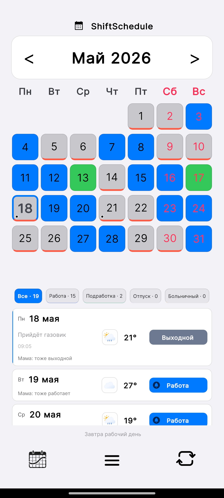

График 2 через 2 — один из самых распространённых в России: охрана, торговля, медицина, производство. Два дня работаешь, два отдыхаешь — звучит просто. Но уже через месяц без чёткой системы легко запутаться: когда у тебя смена, а когда у коллеги? Совпадают ли выходные с партнёром? В этой статье разберём, как работает расчёт, где чаще всего ошибаются и как это автоматизировать.
The 2/2 schedule is one of the most common in Russia — used in security, retail, healthcare, and manufacturing. Two days on, two days off. Sounds simple. But after a month without a clear system, it's easy to lose track: when is your shift, when is your colleague's? Do your days off align with your partner's? This article explains how the calculation works, where people most often go wrong, and how to automate it.
Как устроен цикл 2/2
How the 2/2 cycle works
График 2 через 2 — это повторяющийся 4-дневный цикл: два рабочих дня, потом два выходных. Цикл не привязан к неделе — он идёт непрерывно.
The 2/2 schedule is a repeating 4-day cycle: two working days, then two days off. The cycle isn't tied to the week — it runs continuously.
| День цикла | Cycle day | Статус | Status |
|---|---|---|---|
| 1 | Работа | Work | |
| 2 | Работа | Work | |
| 3 | Выходной | Day off | |
| 4 | Выходной | Day off | |
| 5 | Работа (цикл повторяется) | Work (cycle repeats) |
Чтобы узнать статус любого дня, нужны две вещи: якорная дата (любой известный рабочий день, с которого начинается отсчёт) и сама формула расчёта.
To find the status of any day, you need two things: an anchor date (any known working day to start counting from) and the calculation formula itself.
Формула расчёта
How to calculate
Вручную это считается так:
The manual calculation works like this:
- Возьмите якорную дату — например, 1 января вы работали
- Take an anchor date — for example, January 1 you were working
- Посчитайте разницу в днях между якорной датой и нужным днём
- Count the number of days between the anchor date and the target day
- Разделите на 4 и возьмите остаток: 0 или 1 — работа, 2 или 3 — выходной
- Divide by 4 and take the remainder: 0 or 1 — work, 2 or 3 — day off
Пример: якорная дата 1 января (рабочий). Хотим узнать 25 марта. Разница — 83 дня. 83 ÷ 4 = 20 остаток 3. Остаток 3 — это выходной. Значит 25 марта — выходной.
Example: anchor date January 1 (work day). We want to check March 25. Difference — 83 days. 83 ÷ 4 = 20 remainder 3. Remainder 3 — day off. So March 25 is a day off.
Для одной даты — посчитать реально. Но что если нужно быстро глянуть на месяц вперёд? Или проверить, когда совпадают выходные с женой, которая работает по другому графику? Вот тут начинаются трудности.
For a single date — it's doable. But what if you need a quick overview of the next month? Or check when your days off align with your spouse who works a different schedule? That's where the difficulties begin.
Где чаще всего ошибаются
Where people go wrong
1. Потеря точки отсчёта
1. Losing the starting point
Самая частая ошибка — перепутать якорную дату. Коллега сказал, что 1-го у него работа, вы взяли это за ориентир — но у него другой вариант смен внутри того же предприятия. В итоге весь ваш расчёт сдвигается на день, и вы приходите на работу в выходной.
The most common mistake is mixing up the anchor date. Your colleague said he works on the 1st, you used that as a reference — but he's on a different rotation at the same company. The result: your entire calculation is off by a day, and you show up on your day off.
2. Больничные и отпуск ломают счёт
2. Sick days and vacation break the count
Это ключевое заблуждение: больничный и отпуск не сдвигают цикл. График продолжается по формуле независимо от того, болели вы или отдыхали. Сотрудники нередко думают, что пропуск дня означает сдвиг — и начинают считать заново с неправильной точки.
This is a key misconception: sick days and vacation don't shift the cycle. The schedule continues by formula regardless of whether you were sick or on leave. Employees often think that missing a day means a shift — and start recalculating from the wrong point.
Если вы ушли на больничный на 5 дней — цикл продолжается без вас. Когда вернётесь, статус дня считается по той же якорной дате, как будто перерыва не было.
If you take 5 sick days — the cycle continues without you. When you return, the day's status is calculated from the same anchor date, as if there was no break.
3. Праздники и переносы
3. Public holidays and swapped shifts
Работодатель переносит смену из-за праздника или производственной необходимости — это разовое отклонение, которое не меняет основную формулу. Но если не зафиксировать это отдельно, через месяц уже не вспомнишь, почему один день «выбился» из расчёта.
Your employer moves a shift due to a holiday or operational need — that's a one-off deviation that doesn't change the base formula. But if you don't record it separately, a month later you won't remember why one day didn't match the calculation.
Как это решается в приложении
How the app solves this
ShiftSchedule делает ровно то, что описано выше — только автоматически. Вы один раз вводите якорную дату и параметры цикла, дальше приложение считает за вас.
ShiftSchedule does exactly what's described above — automatically. You enter the anchor date and cycle parameters once, and the app handles all the calculations.

Как настроить график 2/2
How to set up a 2/2 schedule
-
1Откройте приложение → нажмите Настройки → раздел График Open the app → tap Settings → Schedule section
-
2Укажите рабочих дней: 2 и выходных: 2 Set work days: 2 and days off: 2
-
3Выберите якорную дату — любой день, когда вы точно работали Choose an anchor date — any day when you know you were working
-
4Готово. Приложение автоматически раскрасит весь календарь: синие ячейки — работа, серые — выходные Done. The app automatically colors the entire calendar: blue cells for work days, grey for days off
Ручные правки без потери ритма
Manual adjustments without losing the rhythm
Если в конкретный день что-то изменилось — нажмите на ячейку и поставьте нужный статус: больничный, отпуск, внеплановая смена. Это не сдвигает цикл — только помечает отклонение в этот день. Основная формула продолжает работать правильно для всех остальных дней.
If something changes on a specific day — tap the cell and set the appropriate status: sick leave, vacation, or an extra shift. This doesn't shift the cycle — it only marks the deviation for that day. The base formula continues to work correctly for all other days.
Дополнительные возможности
Additional features
- График партнёра — добавьте расписание супруга или коллеги и сразу видите общие выходные прямо в календаре
- Partner schedule — add your spouse's or colleague's schedule and instantly see shared days off right in the calendar
- Будильники по графику — приложение само выставляет будильник перед каждой сменой с нужным опережением
- Schedule alarms — the app automatically sets an alarm before each shift with the lead time you choose
- Заметки к дням — прикрепляйте напоминания к конкретным датам: "взять документы", "вечерний обход"
- Day notes — attach reminders to specific dates: "bring documents", "evening round"
- Алиса — спрашивайте голосом: "я сегодня работаю?", "когда следующий выходной?"
- Alice — ask by voice: "do I work today?", "when is my next day off?"
График 2/2 — не единственный вариант. ShiftSchedule поддерживает любой цикл: 3/3, сутки через трое (1/3), 5/2, день/ночь и любую другую комбинацию рабочих и выходных дней.
2/2 isn't the only option. ShiftSchedule supports any cycle: 3/3, every third day (1/3), 5/2, day/night, or any other combination of work and rest days.
ShiftSchedule — бесплатно для Android
ShiftSchedule — free for Android
Настройте любой сменный график за минуту. Синхронизация с партнёром, будильники, заметки, голосовое управление через Алису.
Set up any shift schedule in minutes. Partner sync, alarms, notes, voice control via Alice.
Скачать в RuStore Get on RuStore APK напрямую Direct APK